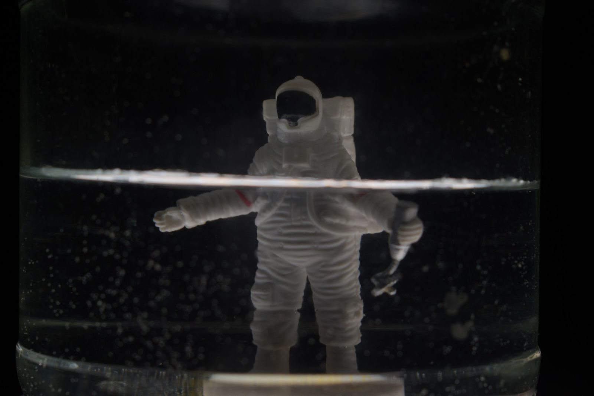

La fotografía es el arte y la técnica de crear imágenes duraderas mediante la captura de luz en una superficie sensible. A lo largo de los años, ha evolucionado enormemente, desde sus inicios en el siglo XIX hasta las cámaras digitales actuales.
La historia de la fotografía comenzó en el siglo XIX. El primer paso importante fue la invención de la cámara oscura, un dispositivo utilizado para proyectar una imagen en una superficie plana. Sin embargo, la verdadera revolución llegó con la creación del daguerrotipo en 1839 por Louis Daguerre, considerado uno de los primeros métodos de fotografía práctica.
En la actualidad, la fotografía ha experimentado un avance significativo gracias a las tecnologías digitales. Las cámaras digitales, los smartphones y las aplicaciones de edición de fotos han hecho que la fotografía sea más accesible que nunca.
Además, los avances en la edición digital, como el software Photoshop y Lightroom, permiten a los fotógrafos manipular imágenes y crear obras artísticas impresionantes.